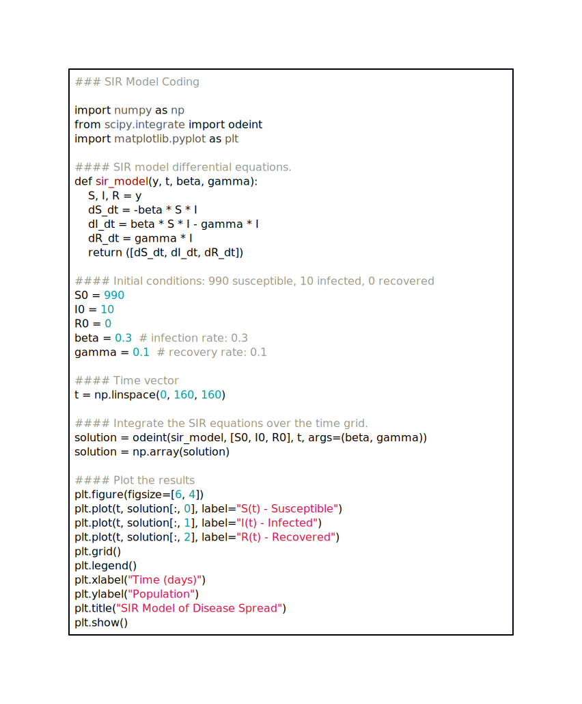
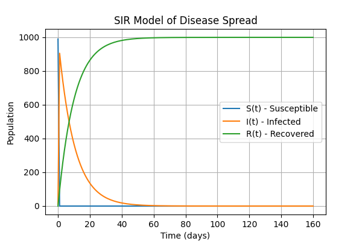
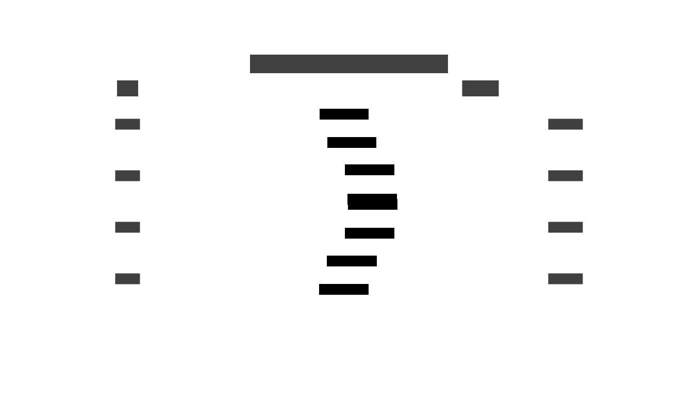
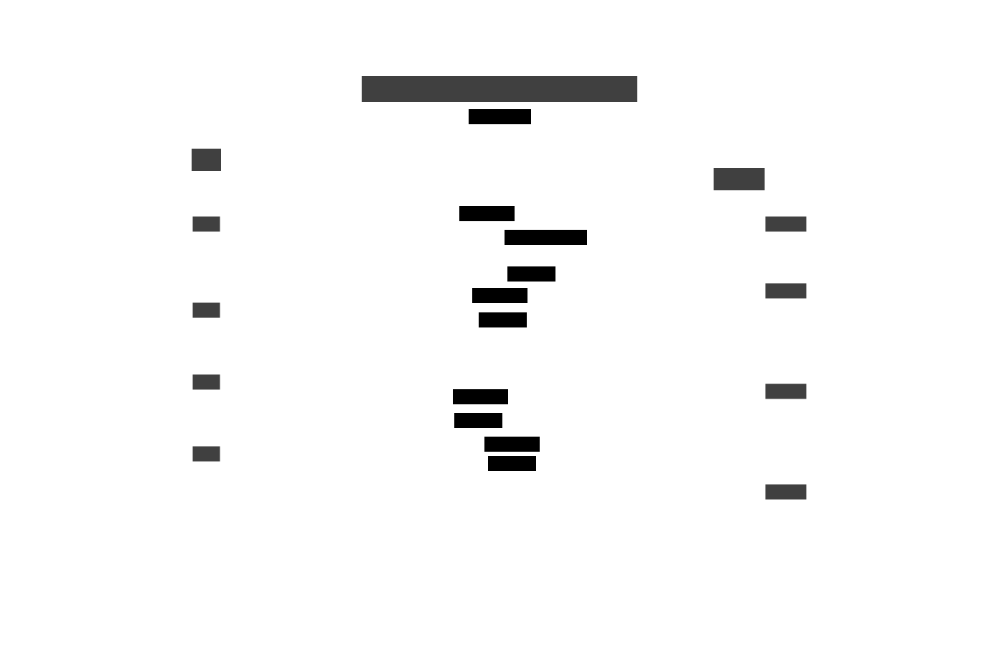

Introduction
Demystifying Complexity: Finding Clarity in Simplicity
In our information-saturated age, complexity often impedes progress. An overabundance of information can lead to:
Information Overload
- Our brains can only process so much information.
- Too many details overwhelm our ability to understand and solve problems.
Decision Fatigue
- Weighing lots of complex options tires out our decision-making.
- The more choices we face, the worse our decisions get.
Analysis Paralysis
- With tons of data, we become unable to choose.
- Fear of choosing wrongly stalls our progress.
Creativity Stifling
- Obsessing over data stifles creativity.
- It stops us from thinking in innovative ways.
Efficiency Drain
- Filtering through information takes time and energy.
- This keeps us from more important work, wasting effort.
Modeling Biological Systems: A Balancing Act
My work involves creating mathematical models of complex biological systems. While models provide valuable insights, they can become entangled in detailed complexity. Finding the optimal equilibrium between real-world accuracy and simplicity is critical. Attempting to capture every single detail often leads to unnecessary complexity and confusion.
The SIR Model: Simplicity at Its Best
The SIR model, representing Susceptible, Infected, and Recovered populations, is a brilliant illustration of this balance. This streamlined model provides a deep understanding of disease spread and dynamics.
The elegance and utility of the SIR model stems from its simplicity:
- Universal Understanding: Its clear visual representation refines complexity into intuitive and graspable components.
- Mathematical Elegance: Despite visual simplicity, the model enables sophisticated mathematical analyses to gain deep insights into herd immunity, vaccine effects, epidemic behaviors, and more.
By providing clarity without extraneous complexity, the SIR model epitomizes the power of simplicity for untangling knotty problems.
Mathematical and Computational Exploration

The model’s equations allow computational simulation of disease spread under diverse scenarios. Programmers can incorporate added sophistication as needed, thanks to the ingrained flexibility of this robust framework.
Simulating the Model

These simulations enable effective policymaking by predicting potential disease outbreaks and spreading patterns.

Simplicity: The Bedrock of Robust Solutions
The SIR model simplifies the intricacy of reality into a basic yet functional framework. It starts with simplicity while allowing incremental additions of complexity later on. This approach provides immense value in biological modeling, enabling comprehension, analysis, simulation, and practical applications. A straightforward and adaptable foundation sets the stage for incorporating nuance and details when necessary.
As another example, consider this simplified model of HIV infection progression:
While simplified, it captures the essence of HIV pathogenesis. This demonstrates the power of abstraction when modeling multifaceted biological phenomena. Identifying key agents and transitions facilitates mathematical analysis, computational implementation, and communication across disciplines. Elementary and flexible beginnings establish robust footings for future elaborations.
Across science and life, simplicity paves the most straightforward path to understanding and success. Embracing simplicity leads to efficient, robust, and elegant solutions to complex challenges.
Information and Complexity Can Be Distracting and Inefficient
Too much information and complexity can distract us and make problem-solving inefficient. Let’s look at how this happens:
Our brains can only process so much information. Too many details overwhelm our ability to understand and solve problems. Weighing lots of complex options tires out our decision-making. The more choices we face, the worse our decisions get. With tons of data, we become paralyzed, unable to choose. Fear of choosing wrongly stalls our progress. Obsessing over data stifles creativity. It stops us from thinking in innovative ways. Sifting through information takes time and energy. This keeps us from more important work, wasting effort. The article “A Framework for Bayesian Optimality of Psychophysical Laws”1 shows how simplicity improves problem-solving:
The simple logarithmic model between stimuli and perception works better than complex linear models. Grouping stimuli into a few discrete perception levels simplifies processing and reduces errors. Simplifying complex perceptions into discrete representations makes the brain’s job easier. Logarithmic perception condenses complex stimuli into manageable perceptions. This captures key information. The theory elegantly explains perception using simple sound data distributions. Logarithmic perception is common in biology because it’s simple and efficient. This theory uses simplicity to explain a biological phenomenon. By reducing complexity, it reveals robust solutions.
In conclusion, simplicity cuts through confusion to focus on what’s essential. It lets us see hidden patterns and find better solutions. Recognizing the downsides of complexity and the power of simplicity can make us more creative, efficient problem-solvers.
Learning New Things Requires Starting from an Empty Slate
Learning deeply requires letting go of preconceived notions. I’ve experienced this challenge firsthand. In abstract algebra, the fundamental math truth that 2 + 2 = 4 doesn’t always hold, depending on the algebraic structure. This was perplexing, as it contradicted my established thinking. Wave-particle duality in physics was also hard to grasp. Light as both a wave and particle defied conventions. Starting fresh without biases makes learning easier. It’s like working on a puzzle without fixed ideas about the pieces. We can objectively see things for what they are. A simple, curious approach removes mental blocks. It opens us to growth and new understanding.
Algorithmic thinking is a tool that helps us navigate complex problems by breaking them down into simpler parts. Think of it as dissecting a complex puzzle into manageable pieces. Much like the mathematical solutions we discussed earlier, this approach allows us to cut through entanglement and find clarity. Embracing a beginner’s mindset, where we approach problems with openness and curiosity, can lead to deeper understanding and joy in learning. By letting go of preconceptions, we can uncover fundamental truths that may be obscured by “what we think we know.” A childlike willingness to re-examine fundamentals often reveals more profound wisdom. With an open and uncluttered mindset, the joy of understanding naturally unfolds.
Conclusion: Simplicity in Complexity
The power of algorithmic thinking transcends academic boundaries, reaching into realms that may seem unlikely. Consider the Stable Marriage Problem:  Through a systematic process of proposing, rejecting, and renewing proposals, this algorithm finds optimal pairings without conflict: 
This seemingly simple example embodies a profound truth: we can unveil elegant solutions by reducing complexity. Algorithmic thinking offers a way to cut through the tangled web of complexity to find clarity. Much like mathematicians distill complexity into understandable forms, we, too, can wield the strength of simplicity to uncover beautiful, practical solutions.
The far-reaching impact of the Stable Marriage Problem, including applications in markets and medicine and recognition with a Nobel Prize in Economics2, illustrates how simplicity can tackle multifaceted societal challenges.
Ultimately, starting with unbiased, simple thinking lays a solid foundation. From there, algorithmic approaches allow us to build advanced yet efficient solutions. The interplay between simplicity and algorithmic thinking opens doors to profound insights and robust problem-solving frameworks. We carve out a path to remarkable discoveries by embracing simplicity and carefully weaving in complexity.
-
Sun, John Z., et al. “A Framework for Bayesian Optimality of Psychophysical Laws.” Journal of Mathematical Psychology, vol. 56, no. 6, Dec. 2012, pp. 495–501. DOI.org (Crossref), https://doi.org/10.1016/j.jmp.2012.08.002. ↩︎
-
“The Sveriges Riksbank Prize in Economic Sciences in Memory of Alfred Nobel 2012.” NobelPrize.Org, https://www.nobelprize.org/prizes/economic-sciences/2012/summary/. Accessed 8 Aug. 2023. ↩︎